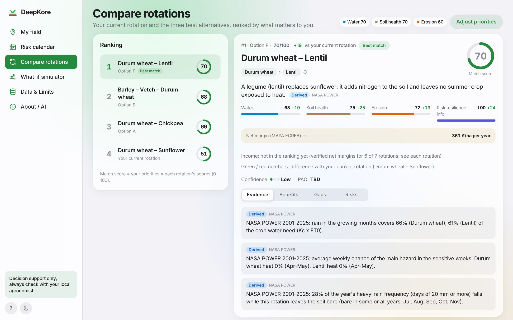
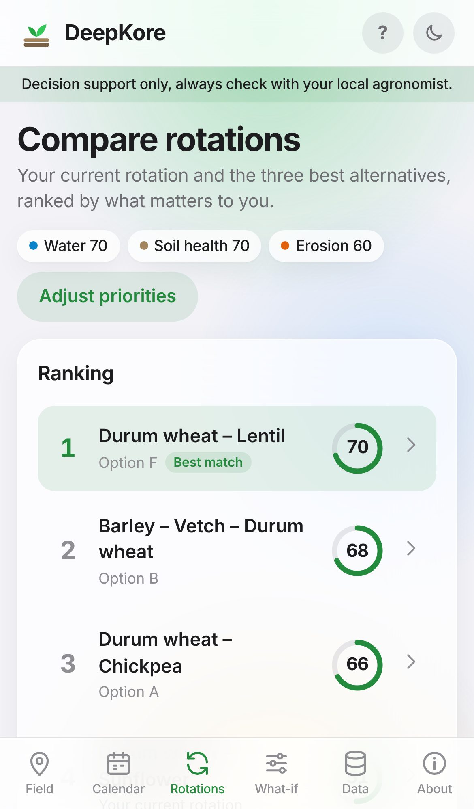
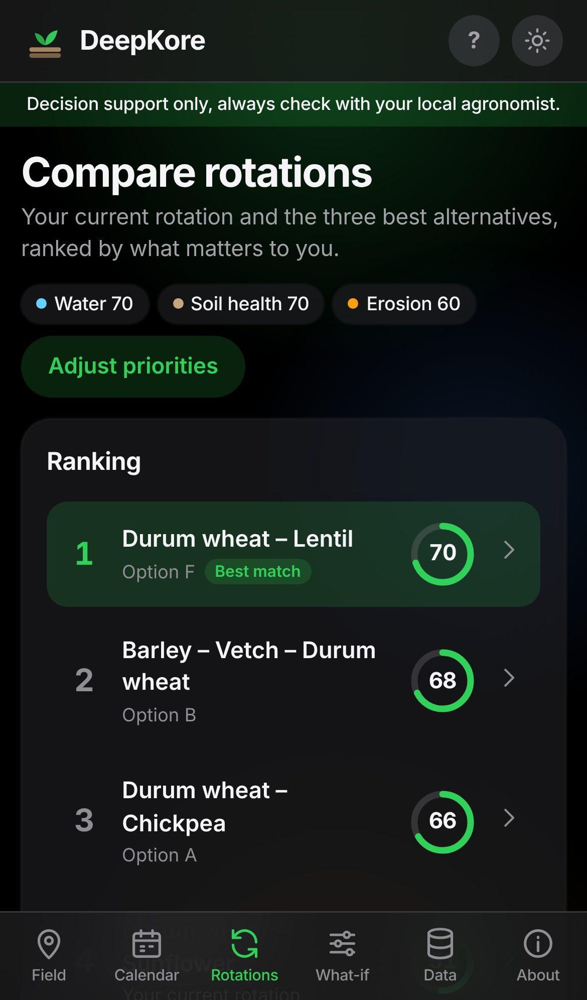
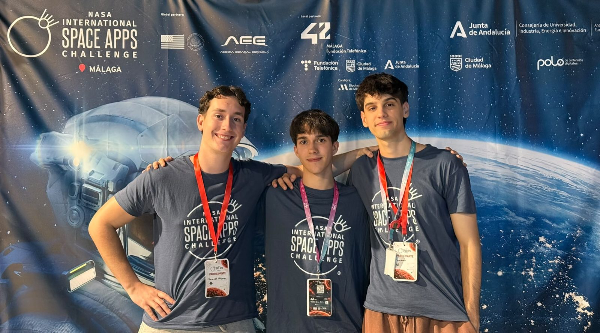

How long does it take to form 1 cm of fertile soil?
Choose the rotation that protects your soil, and prepare before the risk arrives.
A free web app that compares crop rotations for rainfed farms in Andalucía, using 25 years of NASA POWER data and the farmer's own priorities.


The problem
1 cm of soil: up to 1,000 years.
One storm on bare soil can wash it away in an afternoon.
They choose next year's crops by habit. No irrigation: every decision depends on rain, heat and the soil.
Bare soil
Wheat–sunflower leaves the ground bare from July to November
Autumn storms
Heavy rain peaks in October–December, right on that bare soil
Heat and drought
The 2022–23 season was the driest in 25 years at our pilot field
Data, not used
Open satellite data exists, but it does not reach the farm in plain words
Sources: FAO, International Year of Soils 2015 · NASA POWER 2001–2025 at 37.02 N, 4.56 W (our analysis).


The solution
Three steps, on any phone.
Your field, your crops, your priorities
Tap your field anywhere in Andalucía, choose what you grow now, and move four sliders: water, soil health, erosion, income.
See the risky weeks before they come
A 52-week calendar of frost, extreme heat and heavy rain, and soil wetness today.
Compare rotations, with the reasons
Your rotation against the best alternatives: why, evidence, benefits, gaps and risks to check. Plus a what-if climate simulator.
NASA resource and its function
NASA POWER is the engine.
NASA POWER daily data
2001–2025, downloaded live for the farmer's field (API v2.10.3)
- Weekly chance of frost, extreme heat, heavy rainshare of 25 years with a day over the threshold
- Crop water need vs rainFAO-56: ET0 × crop coefficient
- Erosion windowheavy rain on bare soil
- Soil wetness now vs usual · what-if climates
- Risk calendar for their field
- Rotations ranked by their priorities
- The number behind every claim, labelled Derived or Simulated
Without NASA POWER there is no ranking.
Evidence
It works on real data.
193 mm vs a usual 354 mm
Rain from 1 October 2022 to the end of April 2023 at the pilot field: drier than all 21 reference years.
Match score out of 100 with default priorities. The farmer decides the trade-off.
What works today, and its limits
Built in 2 days. Honest about the rest.
- Any field in Andalucía, NASA POWER live in the browser
- Risk calendar, soil wetness, erosion window
- 7 rotations + build your own, ranked by your priorities
- Net margins (Spanish Ministry of Agriculture, ECREA)
- 28 automated tests
- What-if: rain −40 % to +20 %, temperature +0 to +3 °C
- Applied to the real 25-year series
- Shows how the ranking reacts: not a forecast
- Pilot with cooperatives in Málaga
- SMAP, GPM IMERG and SRTM for finer resolution
- Real field boundary and soil data
- Crop calendars and PAC rules verified by agronomists
Decision support only. DeepKore supports the farmer; the local agronomist decides.
Soil takes a thousand years to form. Let's protect it in time.
Thank you.
Try it now
NASA POWER (NASA Langley Research Center) · FAO-56 (Allen et al., 1998) · MAPA ECREA 2.0 · Natural Earth · OpenStreetMap · Code: github.com/euZAPUS/deepkore
